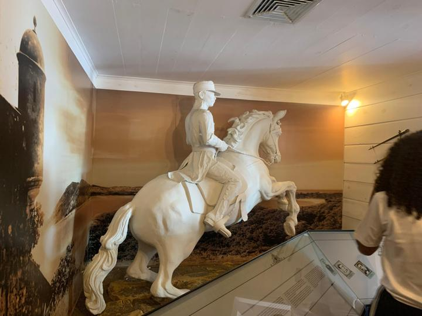
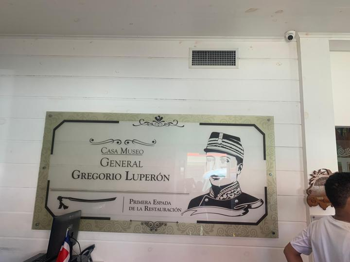
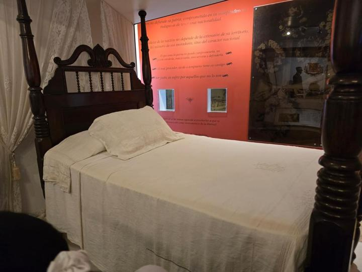
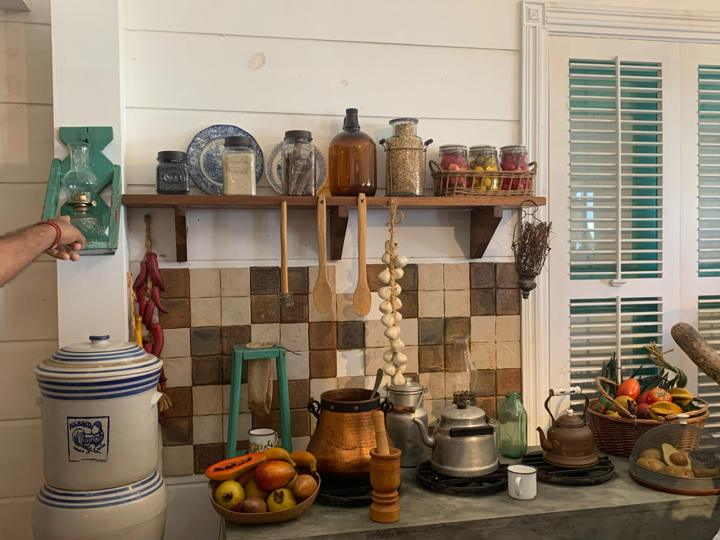
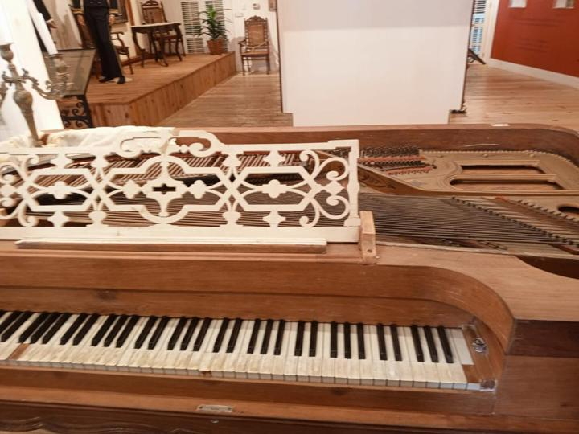

Casa Museo General Gregorio Luperón
Parada 1 · Museo históricoUbicación
Calle 12 de Julio n.º 54, centro histórico de Puerto Plata.
Descripción
La casa de dos niveles, de estilo victoriano, donde vivió y murió el general Luperón, convertida en museo sobre su vida.
Contexto histórico
Luperón (Puerto Plata, 1839–1897) fue uno de los líderes de la Guerra de la Restauración (1863–1865), que devolvió la independencia al país tras la anexión a España. Luego fue presidente (1879–1880).
Características
- Salas sobre la Restauración y la Anexión.
- Ropa de la época en maniquíes.
- Cocina, cama y muebles originales o de época.
- Un piano antiguo y una réplica de su estatua ecuestre.
Lo que aprendí
Que Luperón vino de una familia humilde y llegó a ser una figura militar y política clave. La casa está organizada como su vida: juventud, guerra y legado.
Importancia
Fue declarada Patrimonio Monumental en 2005 y abrió como museo en 2012. Conserva la memoria del principal héroe puertoplateño en su propio hogar.
Dato curioso
A Luperón lo llamaban “la Primera Espada de la Restauración”, como dice el letrero de la entrada. Y el piano del segundo piso, de unos 200 años, lo usaba su hija Luisa para dar clases.




